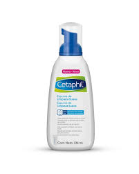

¿Que Es La Rosacea?
informacion
Ocurre principalmente en el rostro y afecta frecuentemente a mujeres de entre 30 años a 40 años. se caracteriza por cursar diferentes grados de inflamacion, tiene momentos en la que esta calmada y otros en la que se reagudiza, por lo cual ssu reagudizacion es usual en momentos importante.
Caracteristicas
- Cambios inflamatorios. La piel reacciona muy facilmente ya que el sistema inmune se encuentra disregulado generando inflamacion.
- Cambios vasculares. La vasodilatacion aumentada presente en esta enfermedad es causadapor un mal funcionamiento en los mecanismos que se encargan de regularla, se podria decir que los vasos saguineos de la piel de estos paciente se dilatan con mas facilidad, provocando mayor flujo de sangre en la piel y de esta manera vuelve a la piel mas caliente y roja.
- Alteraciones nervioso. Se identifica una alteracion a nivel nervioso con respecto a la contraccion y dilatacion de los vasos sanguineos.
- Alteraciones en los micro-organismos de la piel. en los pacientes con rosacea se puede ver una mayor cantidad de demodex en comparacion a una persona con un tipo de piel normal, y en realidad no se sabe si esta cantidad aumentada de este micro-organismo es debido a la rosacea o es una consecuencia de esta condicion.
- Primeramente se debe consultar el tema con un dermatologo que diagnostique la enfermedad que como tal va a tener que ser tratada con medicamentos ya sean de via oral o topicos. Este tratamiento tambien es recomendado complementarlo con productos del cuidado de la piel, tema que se va abarcar mas adelante.
- Cambiar habitos alimenticios como ,por ejemplo, no consumir comidas picantes o muy procesadas, debido a que estan son desencadenantes de los brotes caracteristicos de esta enfermedad.
- Evitar la exposicion al sol mas que nada en las horas alrededor del mediodia, cuando los rayos UV son elevados. este es un horario entre las 10 y 16 horas.
- Verificar que los productos del cuidado de la piel facial sean los adecuados para tratar una piel sensible
- El paso mas importante para cuidar la piel es la proteccion ante los rayos del sol. Los recomendados para este tipo de piel son:
- Los limpiadores faciales recomendados para las necesidades de este tipo de piel son los siguientes
- los hidratantes recomendados para un tipo de piel sensible con rosacea son:
Tratamientos
Productos para el cuidado de la piel

Fotoprotector de ISDIN "Fusion Fluid Mineral".

Fotoprotector de ISDIN "UV Mineral Sunbrush".

Fotoprotector de AVÈNE "fluido solar mineral para pieles intolerantes SPF50".



Hidratante de Cetaphil .
Fotoprotector de ISDIN "UV Mineral Sunbrush".